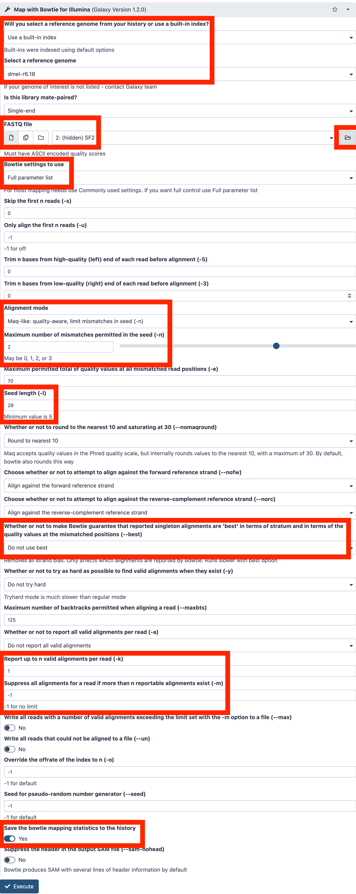
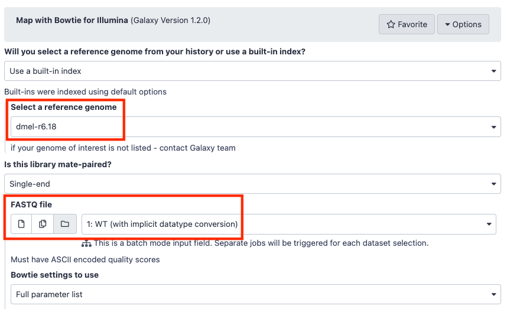
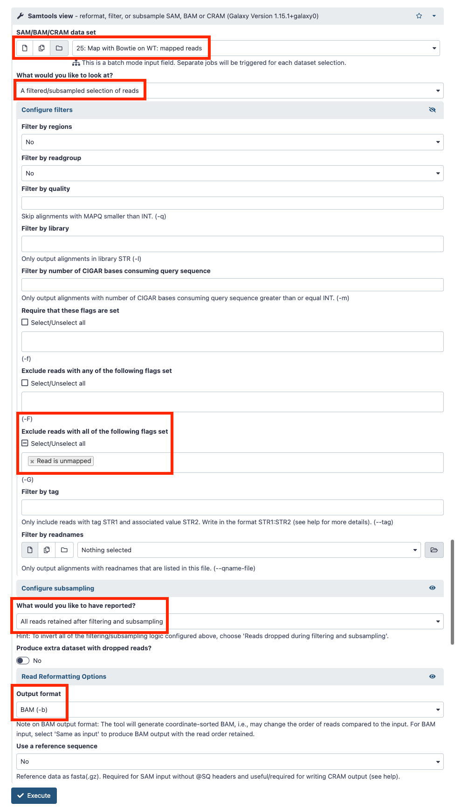
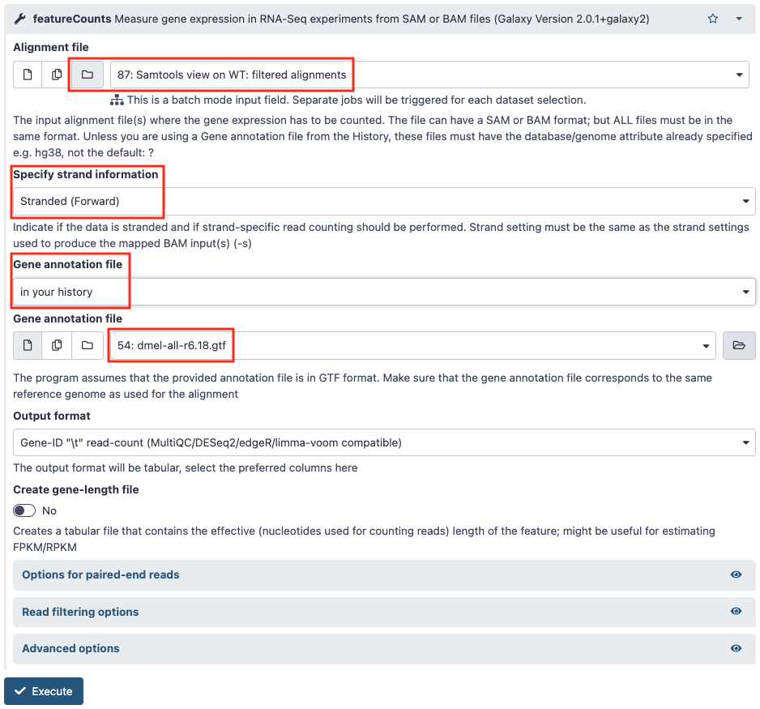
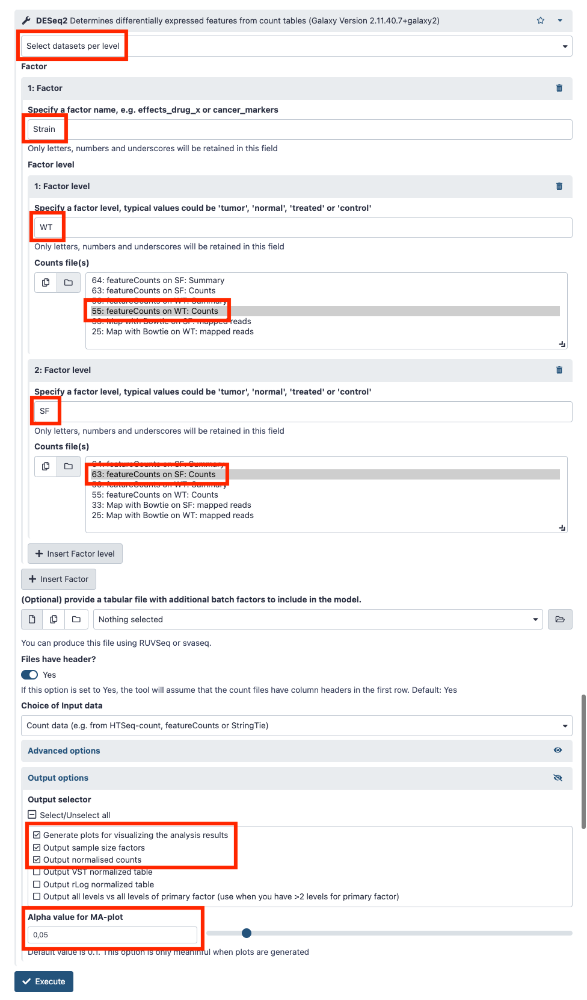
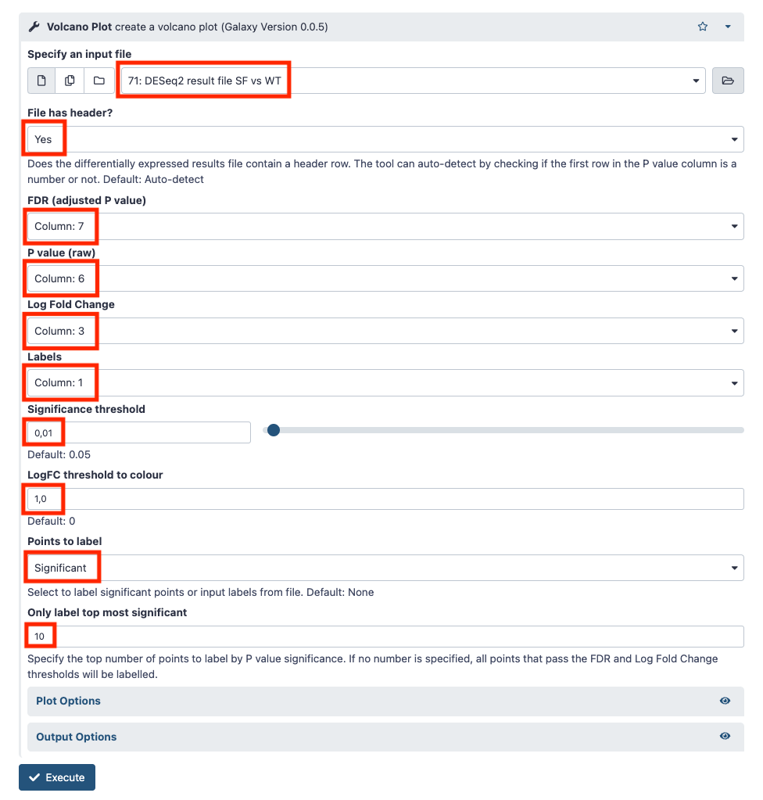
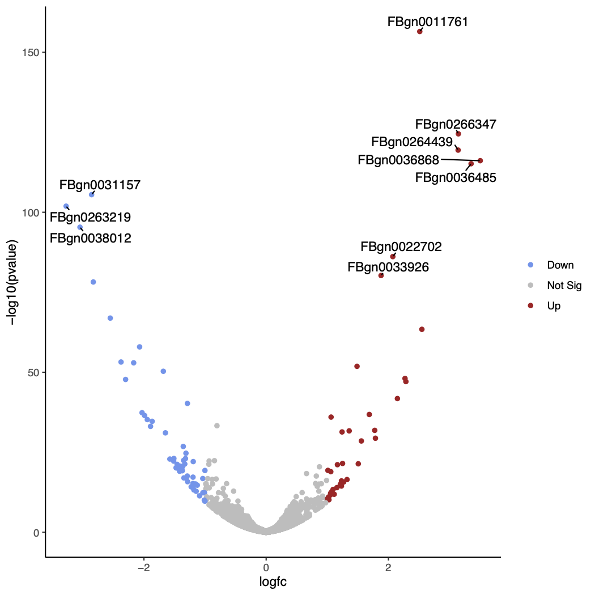
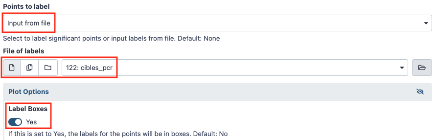
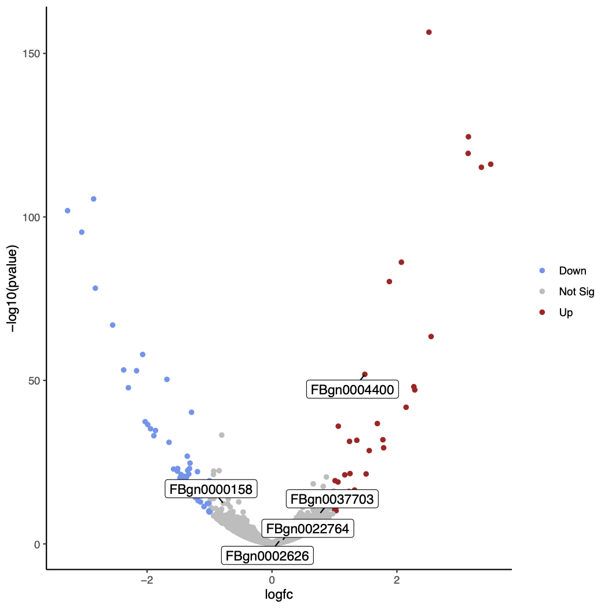
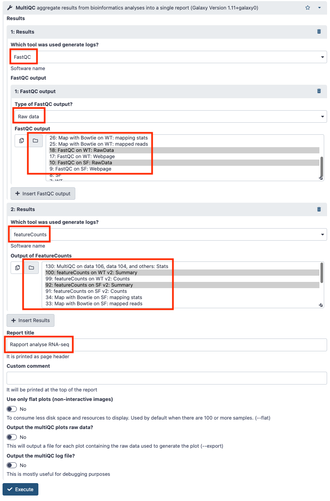

2. Traitement des données de RNA-seq
Compte rendu des résultats
Je vous demande de m'envoyer en message direct dans Slack à la fin de la scéance le cahier de manipulation électronique (fichier texte) dans lequel sont décrites les étapes que vous avez effectuées. L’objectif est que la personne qui va relire ce document soit capable de reproduire ce que vous avez fait et obtenir les mêmes résultats que vous.
Objectif
Le but de cette séance de Travaux Pratiques, est de regarder l’expression différentielle des transcrits en contexte mutant.
Les questions posées tout au long de cette page sont là pour vous guider dans votre analyse, pour vous aider à comprendre ce que vous faites et ainsi mieux appréhender vos résultats. Elles ne sont en aucun cas la base de l’évaluation de votre travail.
Vous allez partir de l'historique que vous avez créé mardi où se trouve les deux collections des données de séquençage des ARN WT et SF (voir le tutoriel).
Contrôle qualité des lectures
Comme dans la partie sur les petits ARN, regardez les résultats du contrôle de qualité effectué par FastQC sur les fichiers fastq pour les 2 collections.
Questions
- Combien de lectures avez-vous dans vos fichiers ?
- Quelle est la version du format fastq utilisée ?
- Les lectures sont-elles de bonne qualité pour poursuivre vos analyses ?
- Pouvez-vous observer des biais particuliers à prendre en compte pour la suite ?
Alignement des lectures sur le génome de la drosophile
Vous allez utiliser bowtie pour réaliser l’alignement des lectures obtenues sur le génome de la drosophile mais le but ici est d’obtenir plus de lectures qui s’alignent car les fragments sont plus longs que pour les petits ARN.
Documentation du logiciel bowtie
Question
- Quels sont les paramètres et les options que vous choisiriez ?
Test des paramètres d'alignement
Ouvrez le tableau Google Sheet dans une nouvelle fenêtre de votre navigateur. Rendez-vous dans l'onglet "Test alignement RNAseq".
Choisissez vos paramètres de mapping à l'exclusion de -n ou -v avec 3 mismatch, et de l'option -a. Sélectionnez des paramètres différents de ceux des autres. Indiquez les sur la ligne du tableau qui commence par votre prénom.
Récupérez le fichier fastq de l'échantillon SF2 depuis l'historique "RNA dataset". Reportez vous aux annexes pour savoir comment copier les données entre historiques.
Nous allons utiliser l’outil Map with Bowtie for Illumina sur les données brutes de l'échantillon SF2 en alignant les lectures sur le génome de référence de la drosophile pour tester différents paramètres d'alignement. Pour sélectionner un élément d'une collection il faut cliquer sur l'icône en forme de dossier au bout de la ligne de choix du fichier fastq.
En cas de soucis d'affichage des données en entrée de l'outil Bowtie, reportez vous aux annexes pour savoir comment changer le type des données.

Une fois l'alignement effectué, indiquez le nombre et le pourcentage de lectures alignées et le temps mis par le programme à s'exécuter dans le tableau partagé.
Alignements des lectures des réplicats SF et WT
Maintenant que vous avez déterminé les options qui vous paraissent les plus pertinentes à utiliser, lancez l’alignement de votre collection de fichier fastq à l'aide de l’outil Map with Bowtie for Illumina.

Questions
- Combien d’alignements avez-vous trouvés ?
- Combien de lectures n’ont pas été alignées ?
Conversion des fichiers SAM
Vous allez effectuer la conversion des fichiers SAM en BAM en éliminant les lectures qui ne se sont pas alignées, puis trier les alignements suivant les coordonnées chromosomiques du génome de référence. Pour cela vous allez utiliser l’outil Samtools view.

Mesure des niveaux d'expression
Afin de déterminer la couverture en lectures de chacun des gènes de la drosophile, vous allez utiliser l’outil featureCounts dont la documentation est disponible en ligne.
Mais avant vous devez copier le fichier d’annotation du génome de la Drosophile (dmel-all-r6.18.gtf) depuis l'historique "References" comme précédemment.
Le format GFF
Le format GFF est un format de fichier standard utilisé pour stocker les informations d’annotation d’un génome dans un fichier texte. GFF signifie Generic Feature Format. Les fichiers GFF sont des fichiers tabulés de 9 colonnes contenant du texte simple. Les spécifications détaillées de ce format sont disponibles en ligne.
Le décompte des alignements va se faire sur le fichier BAM filtré et trié que vous avez généré à l’étape précédente. Pour cela vous utiliserez l’outil featureCounts installé dans Galaxy en sélectionnant "Stranded (Forward)".

Questions
- Quel est le pourcentage des éléments dont le comptage est à 0 ?
- Quelle est la distribution des mesures de couverture obtenue ?
- Mesurez la moyenne, la médiane et les quartiles de cette distribution ?
Utilisation d'un workflow
Pour répondre aux questions précédentes, utilisez le workflow disponible en ligne et suivez le tutoriel de mardi sur la façon d'utiliser les workflows et d'installer les outils dans Galaxy qui vous manquent.
Analyse différentielle
Vous allez maintenant comparer les niveaux d’expression des gènes entre vos 2 conditions à l’aide des 3 réplicats de chaque condition. Pour cela vous devez d’abord récupérer les fichiers de comptage des autres échantillons qu’il vous manque.
Reportez vous aux annexes pour savoir comment partager des données entre serveurs Galaxy.
Ensuite vous allez utiliser l’outil DESeq2 pour effectuer l’analyse différentielle. Il se base sur le package R DESeq2.
Vous devez indiquer à l’outil quels sont les échantillons à rattacher à chaque condition (facteur), puis lancer l’analyse.

Questions
- Quel est le nombre de gènes différentiellement exprimés que vous obtenez ?
- L’étape d’analyse différentielle s’est elle bien déroulée ?
Visualisation sous forme de volcano plot
Pour aller plus loin dans la visualisation vous allez réaliser un volcano plot sur vos résultats grâce à l'outil Volcano Plot. Attention à bien faire correspondre les colonnes demandées au format de sortie de DESeq2.


Un tutoriel très bien fait vous permet d'aller plus loin avec cet outil.
Par exemple voici comment visualiser sur le volcano plot la liste des gènes cibles des amorces que vous avez utilisés en qPCR.
Comme vous l'avez fait pour la liste des chromosomes de la drosophile, créez la liste des noms de gènes cibles de vos amorces de qPRC dans votre historique Galaxy. Appelez la "cibles_pcr". Indiquez "tabular" pour type de données.
Voici la liste des gènes
FBgn0011761
FBgn0004400
FBgn0037703
FBgn0000158
FBgn0002626
FBgn0022764
Relancez l'outil Volcano Plot avec les réglages ci-dessous.


Bonus : obtenir une vue d'ensemble des données
L'outil MultiQC permet de regrouper les résultats des analyses bioinformatiques portant sur de nombreux échantillons dans un seul rapport.
